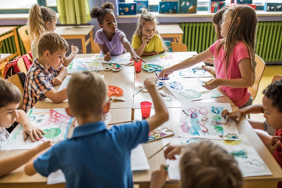

Access and Inequality

What factors shape children's access to and participation in extracurricular activities over time?
DGT HUM 101 Final Project
Whether a child joins a sports team, takes music lessons, or attends a before or after-school program depends on far more than personal interest. Our project investigates who participates in extracurricular activities, who does not, and what those patterns reveal about inequality in American childhood.
Explore Our FindingsEvery afternoon, millions of American children leave school and head somewhere. Some go to soccer practice, violin lessons, or robotics club. Others go home, often because their families cannot afford the fees, transportation, or time that structured activities require. Extracurricular activities are routinely framed as optional extras, but research consistently shows they are connected to academic achievement, social development, emotional well-being, and long-term educational opportunity. That means unequal access is not just a scheduling issue. It is an equity issue.
Using data from the U.S. Census Bureau's Survey of Income and Program Participation (SIPP), our project examines how children's participation in sports, clubs, lessons, and before and after school programs is shaped by family income, parental education, household structure, race and ethnicity, gender, age, and region. We compare two points in time, 2020 and 2023, to track how participation changed across and after the COVID-19 pandemic and what those shifts looked like for different groups of children.

What factors shape children's access to and participation in extracurricular activities over time?
How sharply did extracurricular participation change during and after COVID-19, comparing 2020 and 2023?
How is extracurricular participation tied to academic involvement, homework engagement, and school outcomes?
Extracurricular participation does not exist in a vacuum. Explore key moments in the research and policy landscape that shaped how we think about children's access to activities outside the classroom.